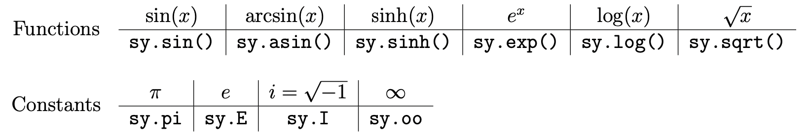

Lab 9: Symbolic Python and Partial Differentiation¶
Chances are you have used a tool similar to Wolfram Alpha to simplify, integrate, or differentiate a complicated algebraic expression. Although Python is primarily used for crunching, relating, or visualizing numerical data, using the SymPy module one can also do symbolic mathematics in Python, including algebra, differentiation, integration, and more. In this lab we introduce SymPy syntax and emphasize how to use symbolic algebra for numerical computing.
Symbolic Variables and Expressions¶
Most variables in Python refer to a number, string, or data structure. Doing computations on such variables results in more numbers, strings, or data structures. A symbolic variable is a variable that represents a mathematical symbol, such as \(x\) or \(\sqrt{\phantom{x}}\), not a number or another kind of data. Operating on symbolic variables results in an expression, representative of an actual mathematical expression. For example, if a symbolic variable Y refers to a mathematical variable \(y\), the multiplication 3*Y refers to the expression \(3y\). This is all done without assigning an actual numerical value to Y.
SymPy is Python’s library for doing symbolic algebra and calculus. It is typically imported with import sympy as sy, and symbolic variables are usually defined using sy.symbols().
import sympy as sy
x0 = sy.symbols('x0') # Define a single variable.
# Define multiple symbolic variables simultaneously.
x2, x3 = sy.symbols('x2, x3') # Separate symbols by commas,
m, a = sy.symbols('mass acceleration') # by spaces,
x, y, z = sy.symbols('x:z') # or by colons.
x4, x5, x6 = sy.symbols('x4:7')
# Combine symbolic variables to form expressions.
expr = x**2 + x*y + 3*x*y + 4*y**3
force = m * a
print(expr, force, sep='\n')
SymPy has its own version for each of the standard mathematical functions like \(\sin(x)\), \(\log(x)\), and \(e^x\), and includes predefined variables for special numbers such as \(\pi\). The naming conventions for most functions match NumPy, but some of the built-in constants are named slightly differently.
{kind=link}
Other trigonometric functions like \(\cos(x)\) follow the same naming conventions. Here is a complete list of SymPy functions.
Task 1¶
Write a function that returns the expression
symbolically. Make sure that the fractions remain symbolic.
Evaluating Expressions¶
Every SymPy expression has a subs() method that substitutes one variable for another. The result is usually still a symbolic expression, even if a numerical value is used in the substitution. The evalf() method actually evaluates the expression numerically after all symbolic variables have been assigned a value. Both of these methods can accept a dictionary to reassign multiple symbols simultaneously.
>>> x,y = sy.symbols('x y')
>>> expr = sy.expand((x + y)**3)
>>> print(expr)
x**3 + 3*x**2*y + 3*x*y**2 + y**3
# Replace the symbolic variable y with the expression 2x.
>>> expr.subs(y, 2*x)
27*x**3
# Replace x with pi and y with 1.
>>> new_expr = expr.subs({x:sy.pi, y:1})
>>> print(new_expr)
1 + 3*pi + 3*pi**2 + pi**3
>>> new_expr.evalf() # Numerically evaluate the expression.
71.0398678443373
# Evaluate the expression by providing values for each variable.
>>> expr.evalf(subs={x:1, y:2})
27.0000000000000
These operations are good for evaluating an expression at a single point, but it is typically more useful to turn the expression into a reusable numerical function. To this end, sy.lambdify() takes in a symbolic variable (or list of variables) and an expression, then returns a callable function that corresponds to the expression.
# Turn the expression sin(x)^2 into a function with x as the variable.
>>> f = sy.lambdify(x, sy.sin(x)**2)
>>> print(f(0), f(np.pi/2), f(np.pi), sep=' ')
0.0 1.0 1.4997597826618576e-32
# Lambdify a function of several variables.
>>> f = sy.lambdify((x,y), sy.sin(x)**2 + sy.cos(y)**2)
>>> print(f(0,1), f(1,0), f(np.pi, np.pi), sep=' ')
0.2919265817264289 1.708073418273571 1.0
It is almost always computationally cheaper to lambdify a function than to use substitutions.
Task 2a¶
The Maclaurin polynomial up to order N for \(e^x\) is defined as
Write a function maclaurin(N) that accepts an integer N, and defines an expression for \(e^x\), then substitute in \(y^2\) for \(x\) to get a Maclaurin polynomial of \(e^{y^2}\).
(Hint: use sy.factorial() to compute the factorial.)
Task 2b¶
Lambdify the expression from Task 2a and display the plot of the polynomial on the domain \(-2 \leq y \leq 2\). Plot \(e^{y^2}\) over the same domain for comparison.
Call your function with increasing values of N to check that the series converges correctly.
Calculus¶
SymPy is also equipped to perform standard calculus operations, including derivatives, integrals, and taking limits. Like other elements of SymPy, calculus operations can be temporally expensive, but they give exact solutions whenever solutions exist.
Differentiation¶
The command sy.Derivative() creates a closed form, unevaluated derivative of an expression. This is like putting \(\frac{d}{dx}\) in front of an expression without actually calculating the derivative symbolically. The resulting expression has a doit() method that can be used to evaluate the actual derivative. Equivalently, sy.diff() immediately takes the derivative of an expression.
Both sy.Derivative() and sy.diff() accept a single expression, then the variable or variables that the derivative is being taken with respect to.
>>> x, y = sy.symbols('x y')
>>> f = sy.sin(y)*sy.cos(x)**2
# Make an expression for the derivative of f with respect to x.
>>> df = sy.Derivative(f, x)
>>> print(df)
Derivative(sin(y)*cos(x)**2, x)
>>> df.doit() # Perform the actual differentiation.
-2*sin(x)*sin(y)*cos(x)
# Alternatively, calculate the derivative of f in a single step.
>>> sy.diff(f, x)
-2*sin(x)*sin(y)*cos(x)
# Calculate the derivative with respect to x, then y, then x again.
>>> sy.diff(f, x, y, x)
2*(sin(x)**2 - cos(x)**2)*cos(y) # Note this expression could be simplified.
Critical Points¶
Let \(f: \mathbb R \to \mathbb R\) be a smooth function. A critical point of \(f\) is a number \(x_0\) in \(\mathbb R\) satisfying \(f'(x_0) = 0\). The second derivative test states that a critical point \(x_0\) is a local minimum of \(f\) if \(f''(x_0) > 0\), or a local maximum of \(f\) if \(f''(x_0) < 0\) (if \(f''(x_0) = 0\), the test is inconclusive).
Task 3a¶
Consider the polynomial
Use SymPy to find all critical points of \(p\) and classify each as a local minimum or a local maximum. Return the collections of local minima and local maxima as sets.
Task 3b¶
Plot \(p(x)\) over \(-5 \leq x \leq 5\) and mark each of the minima in one color and the maxima in another color.
Task 4¶
Calculate the partial derivatives with respect to x and y of the following functions
Bonus material¶
(This will mean a lot more to you later in the semester.)
The Jacobian matrix of a multivariable function \(f : \mathbb R^n \to \mathbb R^m\) at a point \(x_0\) in \(\mathbb R^n\) is the \(m \times n\) matrix \(J\) whose entries are given by
For example, the Jacobian for a function \(f : \mathbb R^3 \to \mathbb R^2\) is defined by
To calculate the Jacobian matrix of a multivariate function with SymPy, define that function as a symbolic matrix (sy.Matrix()) and use its jacobian() method. The method requires a list of variables that prescribes the ordering of the differentiation.
# Create a matrix of symbolic variables.
>>> r, t = sy.symbols('r theta')
>>> f = sy.Matrix([r*sy.cos(t), r*sy.sin(t)])
# Find the Jacobian matrix of f with respect to r and theta.
>>> J = f.jacobian([r,t])
>>> J
Matrix([
[cos(theta), -r*sin(theta)],
[sin(theta), r*cos(theta)]])
# Evaluate the Jacobian matrix at the point (1, pi/2).
>>> J.subs({r:1, t:sy.pi/2})
Matrix([
[0, -1],
[1, 0]])